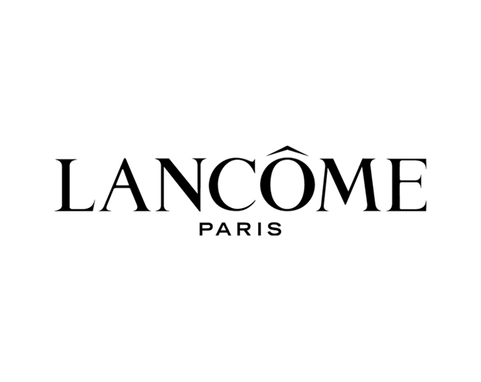
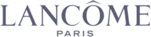
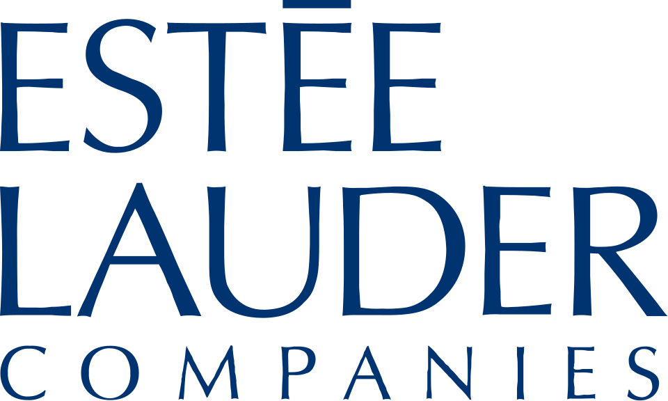
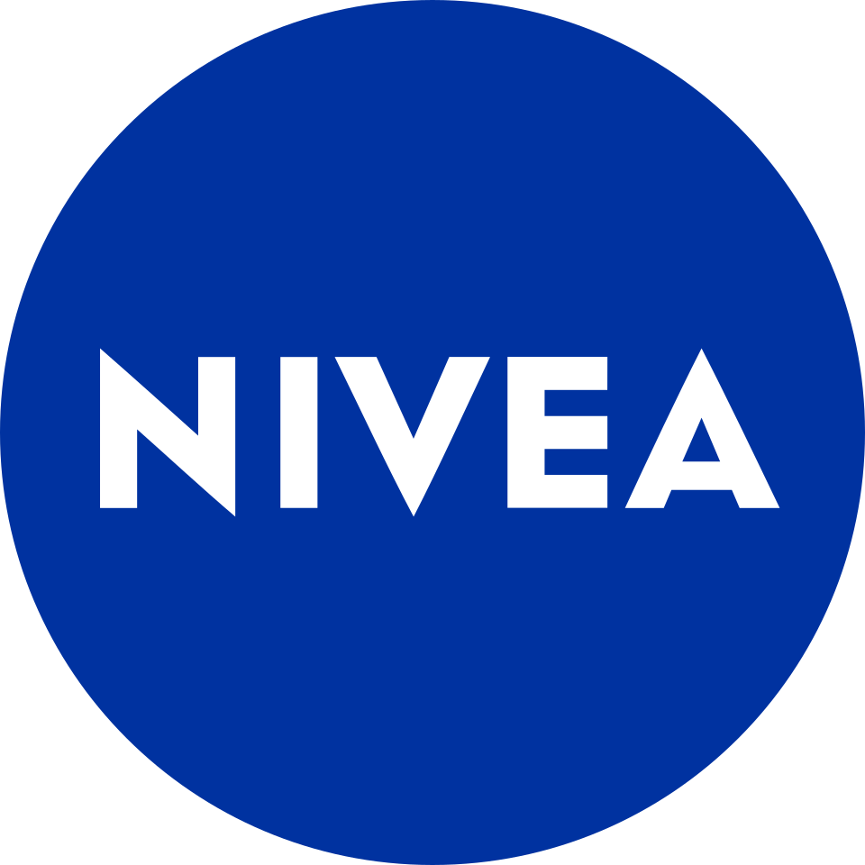
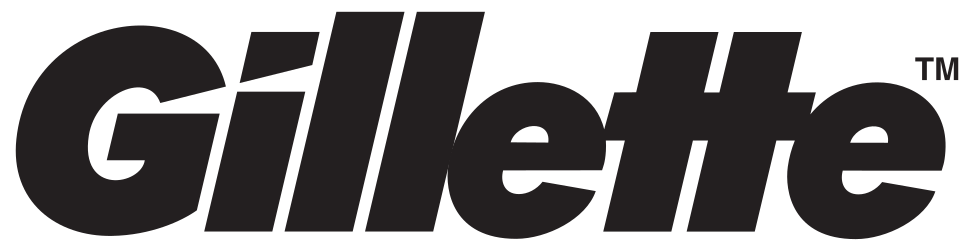
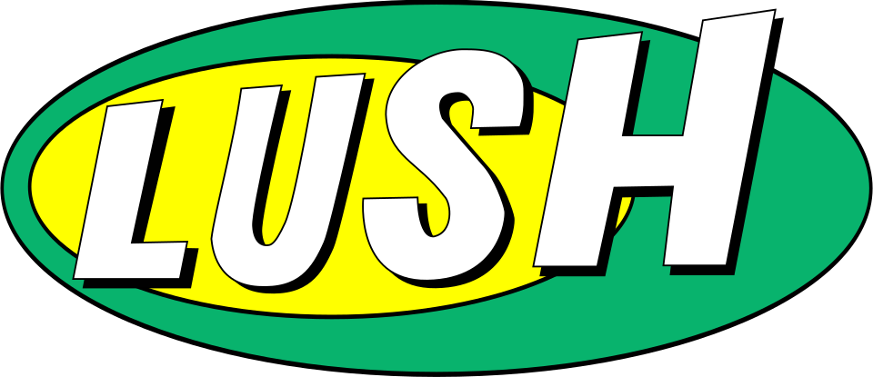
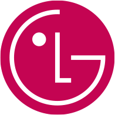

홈 > 브랜드 매거진 > 랑콤
랑콤
랑콤(Lancôme)은 로레알 그룹 산하의 프랑스 럭셔리 화장품 브랜드이다.
산업 분야 뷰티·퍼스널케어 · 공개 등급 자료 기반 · 브랜드 평가 4.3 ★


한눈에 보는 브랜드
랑콤(Lancôme)은 1935년 아르망 프티장(Armand Petitjean)이 파리에서 설립한 프랑스 럭셔리 뷰티 브랜드다. 향수에서 출발해 스킨케어와 메이크업까지 확장했고, 1964년부터 로레알(L'Oréal) 그룹 산하 럭셔리 부문에 속해 있다.
로레알 럭스(L'Oréal Luxe) 사업부의 핵심 축으로 꼽히며, 90개국 이상에서 판매되는 글로벌 프레스티지 브랜드로 자리한다.
브랜드 관점
같은 럭셔리 뷰티라도 결이 다르다. 에스티로더(Estée Lauder)가 미국식 과학·고기능 안티에이징을 앞세우고 디올 뷰티가 패션 하우스(LVMH)의 쿠튀르 이미지를 빌려온다면, 랑콤은 장미와 프로바이오틱스 같은 식물 유래 성분, 광채와 피부 장벽 회복이라는 프랑스식 우아함을 정체성으로 내세운다.
제품 포트폴리오는 세 기둥으로 읽힌다. 스킨케어의 제니피크(Génifique), 고가 라인 압솔뤼(Absolue), 향수의 라비에벨(La Vie Est Belle)이다.
로레알 럭스 부문에서 매출 비중이 큰 간판 브랜드이며, 한국 시장에서는 정호연이 글로벌 앰배서더로 라비에벨 캠페인에 참여하는 등 K-스타 기용으로 현지 존재감을 키워왔다.
시작과 성장
창업자 아르망 프티장은 향수 거장 프랑수아 코티(François Coty) 밑에서 조향을 익힌 뒤, 50세이던 1935년 자신의 브랜드를 세웠다. 그해 브뤼셀 만국박람회에 트로피크, 콩케트, 키프르 등 첫 향수 다섯 종을 선보여 호평받았다.
1936년 첫 스킨케어인 보습 크림 뉘트릭스(Nutrix)를 출시했고, 1938년에는 립스틱으로 메이크업까지 영역을 넓혔다. 브랜드명은 프랑스 앵드르 지방의 랑콤(Lancosme) 숲과 방돔 광장의 어감에서 따왔다.
1961년 프티장이 아들에게 사업을 넘겼고, 1964년 로레알이 인수하며 글로벌 확장의 발판을 마련했다. 이후 제니피크 세럼 등 히트작이 잇따르며 프레스티지 스킨케어 강자로 올라섰다.
브랜드 아이덴티티
랑콤의 상징은 황금빛 장미다. 랑콤성(Château de Lancosme) 폐허에 핀 꽃과 식물화가 피에르 조제프 르두테(Pierre-Joseph Redouté)의 그림에서 영감을 받았다고 전해지며, 여성성과 시간을 견디는 아름다움을 함축한다.
로고는 단정하고 시크한 우아함을 원칙으로 삼아 안정감과 전문성을 드러낸다. 타깃은 광채와 안티에이징을 중시하는 성인 여성층이며, 럭셔리하되 친근한 '행복으로서의 아름다움'이라는 메시지로 브랜드 보이스를 다듬는다.
제품과 서비스
스킨케어는 비피더스 프리바이오틱·히알루론산을 담은 제니피크 세럼과 고가의 압솔뤼 크림이 중심이고, 메이크업은 파운데이션·립·아이 라인을, 향수는 대표작 라비에벨을 축으로 한다. 한국 기준 제니피크 크림은 약 11만 원대, 세럼 100ml는 약 14만 원대로 프레스티지 가격대다.
백화점 카운터, 면세점, 랑콤 공식 온라인몰과 신세계몰 등 주요 이커머스에서 판매된다.
사람들
창업자: 아르망 프티장(Armand Petitjean)이 1935년 창립했다. 소유: 로레알 그룹(L'Oréal, 1964년 인수) 럭셔리 사업부.
현재 상태
모회사는 프랑스 로레알 그룹이며 본사는 파리에 있다. 로레알의 2024년 연결 매출은 약 435억 유로, 그 가운데 럭셔리 사업부인 로레알 럭스가 가장 큰 비중을 차지하고 랑콤이 그 핵심 브랜드로 기여한다.
다만 랑콤 단일 브랜드의 매출과 영업이익은 그룹 합산으로 통합 공시될 뿐 개별 수치는 공식적으로 공개되지 않는다.
타임라인
BI/CI 변천사
함께 읽을 브랜드

뷰티·퍼스널케어 · 자료 기반에스티 로더에스티 로더(Estée Lauder)는 1946년 미국에서 창립된 프레스티지 화장품 브랜드이자 글로벌 뷰티 그룹이다.
뷰티·퍼스널케어 · 자료 기반설화수설화수(Sulwhasoo)는 아모레퍼시픽이 1997년 론칭한 대한민국의 한방 럭셔리 스킨케어 브랜드다. 한방 원료와 프리미엄 포지셔닝으로 아모레퍼시픽을 대표하는 럭셔...

뷰티·퍼스널케어 · 편집 검수니베아니베아(NIVEA)는 1911년 독일 바이어스도르프(Beiersdorf)가 출시한 글로벌 스킨케어 브랜드다. 세계 최초의 안정적인 유중수(油中水) 유화 크림을 선보이...
 뷰티·퍼스널케어 · 자료 기반코스맥스
뷰티·퍼스널케어 · 자료 기반코스맥스코스맥스(COSMAX)는 1992년 설립된 한국의 화장품 ODM 기업으로, 세계 1위 화장품 ODM 제조사로 꼽힌다.

뷰티·퍼스널케어 · 자료 기반질레트질레트(Gillette)는 1901년 킹 질레트가 미국에서 설립한 면도기·면도용품 브랜드다. 교체형 안전면도기를 대중화했으며, 현재 P&G 산하의 글로벌 그루밍 대표...

뷰티·퍼스널케어 · 매거진 완성러쉬러쉬는 영국의 뷰티·퍼스널케어 브랜드로, 성분, 사용감, 패키지, 이미지 언어가 구매 판단에 직접 연결되는 영역입니다.
 뷰티·퍼스널케어 · 편집 검수도브
뷰티·퍼스널케어 · 편집 검수도브도브(Dove)는 유니레버가 1957년 출시한 비누·바디케어 퍼스널케어 브랜드이다.

뷰티·퍼스널케어 · 자료 기반LG생활건강LG생활건강(LG H&H Co., Ltd.)은 화장품·생활용품·음료를 아우르는 한국 기업으로, 현 법인은 2001년 LG화학에서 분할 신설됐다.